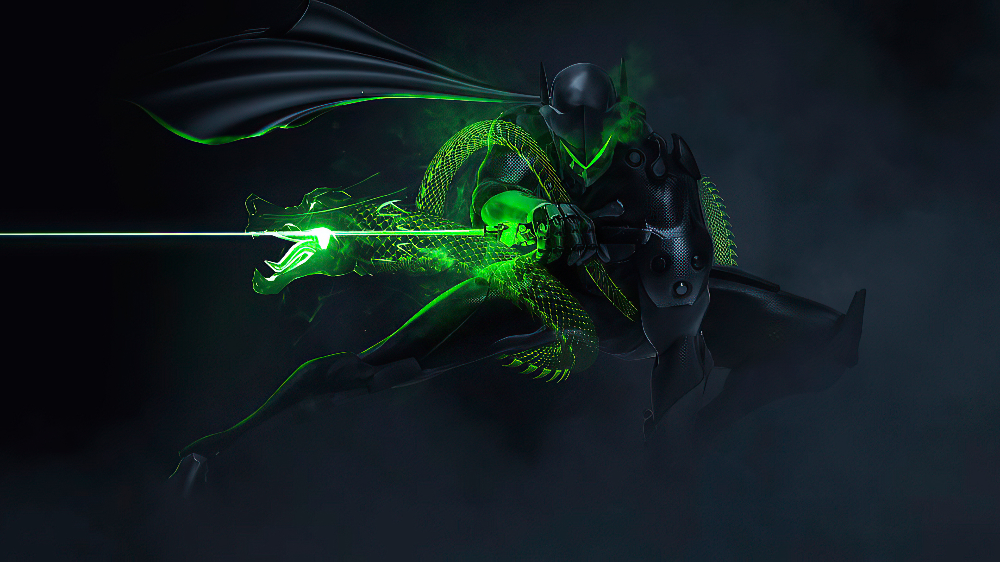
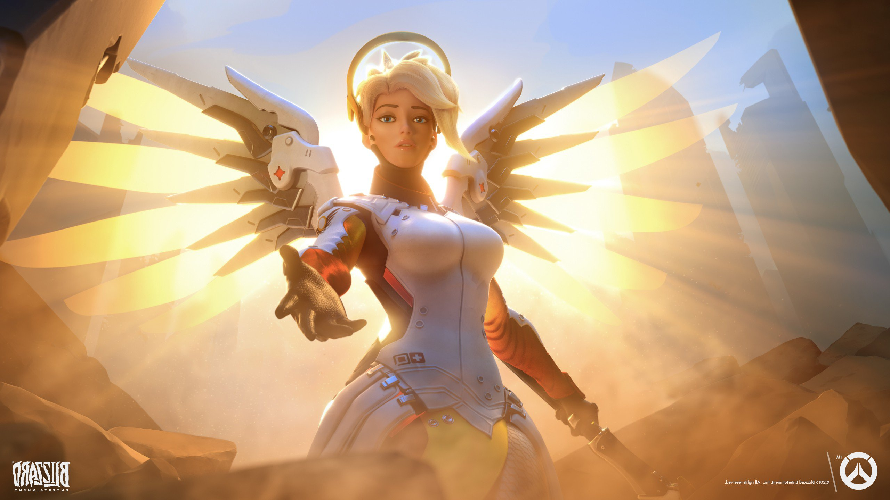
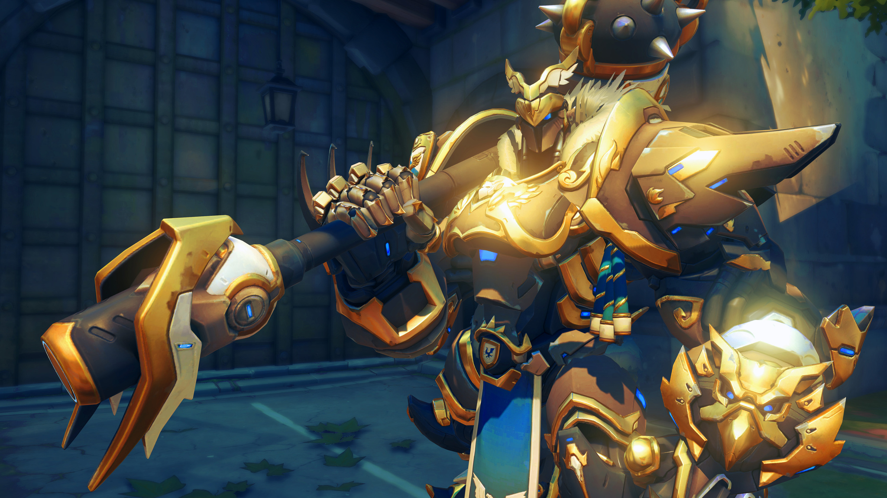

You are dps!

Pros: determined, energetic, confident
Cons: sometimes care more about numbers, can work by alone rather than with a team, to prideful to switch to a better role
You are a support!

Pros: keeps the team alive, the backbone that can make or break the teams success
Cons: easy to focus on teammate rather than spread the heals, can go rouge (looking at you Moira mains), can get impatient and push to far up with the tanks
You are a tank!

Pros: willing to protect the team from damage, takes the job few people want to do , can change the course of game by sticking to the role
Cons: can be to caught up with causing damage, sometimes will push to far up with no support and be a sitting duck
You are a flex!
 Pros: jack of all trades, fill in any spot where the team needs it, selfless and cares more about getting the win than playing your favorite character
Pros: jack of all trades, fill in any spot where the team needs it, selfless and cares more about getting the win than playing your favorite character
Cons: jack of all trades...king of nothing, can fall in the trap of still having favorites